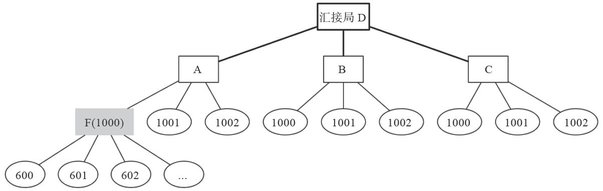
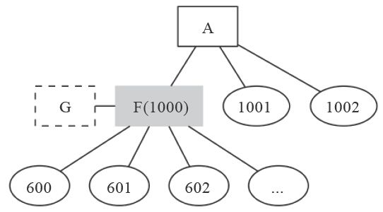

13.3 FreeSWITCH作为PBX
在图13-4所示的图网络结构中，假设A、B、C一层的都是运营商提供的端局交换机，最底层的1000、1001等是端局上的用户。如果再向下延伸，我们可以在端局用户这一层再搭建自己的PBX，下面再挂分机用户。
13.3.1 普通的PBX设置
FreeSWITCH的配置就是一个全功能的PBX。假设我们有了A上1000这个用户账号，我们以前是接了一个SIP软电话往外打电话的。现在，我们把它换成FreeSWITCH（我们称为F），并且在FreeSWITCH上创建600～619这20个用户 [1] ，这时候的拓扑结构如图13-5所示。

图13-5 FreeSWITCH作为PBX
因为F是作为A上的一个用户（1000）存在的，所以它只能作为一个普通用户向A去注册。对于A而言，它就认为F是一个普通的SIP电话客户端（或软电话）。
为了能使F能向A注册，我们在F上添加一个网关（gateway）指向A，配置如下 [2] ：
<include>
<gateway name="gw_A">
<param name="realm" value="192.168.1.A"/>
<param name="username" value="1000"/>
<param name="password" value="1234"/>
</gateway>
</include>
添加完上述配置后这样，我们就有了一个名称为gw_A的网关。本地的用户600～619就可以通过如下的Dialplan拨打外部的电话了（假设PBX的出局码为0）：
<extension name="ga_A">
<condition field="destination_number" expression="^0(.*)$">
<action application="bridge" data="sofia/gateway/gw_A/$1"/>
</condition>
</extension>
该Dialplan的含义就是遇到以0开头的被叫号码，“吃掉”0，然后将电话送到gw_A定义的网关上。假设分机600想拨打A上的1001，就可以直接拨打01001，600的SIP客户端将向F发送INVITE（呼叫01001），F再向A发送INVITE（1001），对于A而言，F到底是用的FreeSWITCH还是用的SIP软电话都是一样的。在1001上收到呼叫以后，看起来也是从1000打过来的（来电显示的号码是1000）。
如果A上的1001想呼叫600，则它必须先呼叫1000，因为600这个号码是无法直达的（如600这个人的名片上可能印着“电话：总机(A)1000转600”），然后F上会启动一个IVR，让1001输入一个分机号，并为其转接到相应的分机号。
一般来说，端局A不允许主叫号码透传，即不管F上的哪个分机往外打电话，都会在对方的话机上显示1000这个主叫号码。当然，我们这里的A是FreeSWITCH，那么我们就可以设置允许1000往外打电话时进行主叫号码透传。只需要在A上找到1000这个用户的配置文件（1000.xml），将下面的行注释掉就可以了。
<variable name="effective_caller_id_number" value="1000"/>
其中，effective_caller_id_number就表示1000这个用户如果发起呼叫时（从F来的所有呼叫都变为是1000这个用户发起的）对外显示的号码是什么，默认的设置就是1000。注释掉该项后，就会根据实际的来电号码对外进行发送。那么，如果600发起呼叫时，在A上看到的实际的来电号码是什么呢？首先，600发起呼叫时，呼叫到达F，F查找600的用户配置文件，应该能找到类似的如下的配置，因此F将对外发送主叫号码600。
<variable name="effective_caller_id_number" value="600"/>
呼叫到达A后，它看到F送过来的主叫号码是600，而1000这个用户又没有设置effective_caller_id_number这个参数（从F来的所有通话均认为是从1000来的，刚才该参数已经被我们注释掉了）便可以对外显示这个600，因而1001话机上就显示了600，实现了电话号码的透传。
可以看出，实现电话号码透传本身是很简单的事情。所以它本身不是什么技术问题，而在实际应用中主要是面临一个现实问题，那就是如果所有人都可以做任意透传电话号码，那么所有人都可以任意冒充任何人打电话（试想一下有人冒充110或国务院的电话的情况）。
电话号码透传带来的另一个问题就是回呼。在上述情况下，如果1001收到600来的呼叫，显示的主叫号码是600，显然这个号码是无法回呼的，即1001无法通过这个号码直接呼通600，因为600这个号码理论上讲对于1001所在的交换机A来说是不存在的。它最多只能呼通到1000。
为了解决这个问题，我们先把600呼出时对外显示的主叫号码变换一下，下面的代码即Dialplan将600的主叫号码变换为1000600：
<extension name="ga_A">
<condition field="destination_number" expression="^0(.*)$">
<action application="set"
data="effective_caller_id_number=1000${caller_id_number}"/>
<action application="bridge" data="sofia/gateway/gw_A/$1"/>
</condition>
</extension>
至于为什么这么变换，我们将在下一节给出答案，并给出回呼解决方案。
13.3.2 DID
我们在前面的章节中不止一次讲到DID这个概念。在13.1.1的方式中，对于F而言，号码1000就是一个DID。因为在A上的其他用户都可以通过拨打1000这个号码打到F上，其他交换机如B、C上的用户也可以通过拨打A1000呼叫到F上。当然，从13.1.1节我们也看到，其他用户如果想呼叫F内部的分机，就只能先拨叫1000这个DID号码，然后，再通过IVR，以人工总机或自动总机转接的方式转到对应的分机上。那么，我们能不能直接呼叫到内部的分机呢？毕竟，DID的真正含义是“对内直接呼叫”，目前看来，我们还未实现这个目标。
要实现这个在技术上当然是可以的。让我们来考虑这样一种拨号方案：对所有A上的用户而言（如1001），如果想直接呼叫F上的内部分机600~619，就需要呼叫1000加上这些分机号。如1001呼叫F上的600，则需要呼叫1000600。
我们已经在上一节将600对外呼出的主叫号码设置成了可以对外显示1000600，因此只要能在A上设置正确的回呼路由，电话就应该能呼通了。
确定了拨号方案以后，我们再来看在A上的实现。为了要让A上其他用户打1000开头的电话号码都送到F上，我们需要在A上增加一个Dialplan项，于是我们很快想到了如下的Dialplan：
<extension name="F-DID">
<condition field="destination_number" expression="^(1000.*)$">
<action application="bridge" data="..."/>
</condition>
</extension>
其中，我们让的正则表达式^(1000.*)$表示匹配任何以1000开头的电话号码。如果匹配到这样的电话号码，则将电话桥接到我们希望的地方。可是到这里，bridge后面的参数怎么写呢？我们知道，这里我们要给一个呼叫字符串，但是这里的情况不同于我们上面讲到的任何一种情况，呼叫字符串该怎么写呢？
首先，让我们来看一下这里的情况与上述讲的有什么不同。在上面的各种情况中，各FreeSWITCH之间的对接都是通过IP方式的，即一般来说各FreeSWITCH之间都互相知道对方的IP地址，也就是说各FreeSWITCH的IP是相对固定的。而在这里，F的IP地址对A来说是不固定的。因为F是以动态注册的方式注册到A上的，因而只有F向A注册的时候A才能知道F的IP地址，并且F的IP是可以不断变化的，每次变化后F都会重新向A注册它的IP地址，以让A能找到它。在这种情况下，如果让A能找到F，那么我们应该就能在A上动态地获取F的IP地址了。
实际上，我们已经知道，A本来就能动态获取F的IP地址，下面的配置方式我们已经很熟悉了：
<action application="bridge" data="user/1000"/>
上面的呼叫字符串“user/1000”我们已经讲到很多次了，它的作用就是在A上找到1000这个注册用户注册时的Contact地址（即F的地址），然后向该地址上发送INVITE请求。
但在这里，如果我们还是这样配置的话，很显然不能达到我们的要求。因为使用这种方法获取到的呼叫字符串，在呼叫到达F后，被叫号码（即DID）永远是1000，而我们想要在有人呼叫1000606时把被号码变成1000606。所以，这里我们就需要解决两个问题：①在A上动态能找到F的IP地址；②呼叫到达F后被叫号码变成我们指定的被叫号码。
我们先一步一步来看。当F向A注册时，它提供了自己的Contact地址，我们通过前面的学习已经知道，可以用以下命令在A上查看相关信息（以1000为过滤条件显示注册用户）：
freeswitch> sofia status profile internal reg 1000
Registrations:
=================================================================
Total items returned: 0
=================================================================
但令人奇怪的是，它并没有显示出1000的注册信息。这是为什么呢？
在回答为什么之前，我们先来试一下以下的命令。在下列命令中我们在显示时去掉了1000这个过滤条件，从中我们可以看到类似如下的输出信息（省略其他不相关的输出）：
freeswitch> sofia status profile internal reg
Registrations:
=====================================================================
Call-ID: d3db5f74-3fb9-4951-ac38-75b419ba4894
User: 1000@192.168.1.F
Contact: "user" <sip:gw+gw_A@192.168.1.F:5080;transport=udp;gw=gw_A>
.....
从中可以看出，User一行标明我们的确有一条来自192.168.1.F上的用户1000的注册信息，不过该用户的注册信息中的Contact地址是比较奇怪的。由于它里面没有包含1000这样的用户名，所以我们在上面想用1000为过滤条件限制输出结果时失败了。
当然，该Contact字符串来自于F，我们来讲一下F为什么这么做。
F向A注册是以在F中添加一个到A的网关实现，并以“gw_A”这个名字来标志这个网关。F向A注册时使用了这样的Contact字符串。注册完成后，如果A上有电话需要呼叫F时，F就会向A发送INVITE请求。通过上面的注册信息，A向F发的INVITE请求如下：
INVITE gw+gw_A@192.168.1.F:5080;transport=udp;gw=gw_A SIP/2.0
这样当F上收到上面的INVITE请求后，就可以知道该呼叫是从gw_A这个网关来的，这样便于知道呼叫的来源。否则的话，F也可以使用像“1000@192.168.1.F:5080”这样的Contact字符串，可是那样的话它会收到类似“INVITE 1000@192.168.1.F:5080”这样的呼入请求，不便于将呼叫来源与F中本身已定义的gw_A网关关联。
继续看上面的INVITE请求。其中有两个“gw_A”。第一个“gw+gw_A”实际上出现在被叫号码的位置，这时候如果F检测到被号号码中有“gw+”以后，就能找到gw_A这个网关了。有时候，在A是其他SIP服务器的情况下，可能会将该字段放入真正的被叫号码，如“INVITE 1000@192.168.1.F...”，这样，F就会尝试从后面的“gw=gw_A”这个位置（分号后面都相当于参数）找到gw_A这个网关名称。当然，如果A不发送这些参数的话，F就无法与系统中配置的网关进行关联了（不过电话仍然可以通）。
F收到上述的INVITE请求后就会在本地的网关gw_A中找到真正的被叫号码1000（从extension参数或username参数中找）。
实际上，上述的Contact地址已经包含了F的IP，我们可以在A的命令行上使用下列命令找到它：
freeswitch> sofia_contact internal/1000@192.168.1.A
sofia/internal/sip:gw+gw_A@192.168.1.F:5080;transport=udp;gw=gw_A
其中，sofia_contact是一个API命令，它的参数格式为“Profile/User@Domain”。可以看到，我们这里的Profile是internal，User是1000，Domain就是A的IP地址。
在继续往下研究之前，我们需要先来做一些实验。实验中，我们会用到echo和expand这两个API命令。其中，echo命令会将字符串原样输出，如：
freeswitch> echo test
test
freeswitch> echo $${domain}
$${domain}
我们虽然已经知道A上的Domain（即A的IP地址）是192.168.1.A，而且它也是相对固定的。但是，在实际应用中还是用变量引用比较方便一些。默认情况下，在XML中的配置都是会进行变量替换的，但在命令行上不会。如果要在命令行上进行变量替换，就需要用到一个expand API命令：
freeswitch> expand echo $${domain}
192.168.1.A
可以看到，由于expand的作用，$${domain}被替换成了实际的值。接下来，我们继续进行实验：
freeswitch> expand sofia_contact internal/1000@$${domain}
sofia/internal/sip:gw+gw_A@192.168.1.F:5080;transport=udp;gw=gw_A
有了1000的Contact地址后，我们可以构造如下的命令呼叫它，如：
freeswitch> expand echo originate ${sofia_contact(internal/1000@$${domain})} &echo
originate sofia/internal/sip:gw+gw_A@192.168.1.F:5080;transport=udp;gw=gw_A &echo
可以使用“${API命令(参数)}”的形式引用一个API命令的结果。所以上述的originate命令后面的参数需要的呼叫字符串就是用“${sofia_contact()}”动态获取的。当然，上述的命令是echo输出后的结果，如果我们去掉echo，就可以直接执行originate呼叫1000了：
freeswitch> expand originate ${sofia_contact(internal/1000@$${domain}) &echo
在A上执行上述originate命令后，它就会向F发送如下的INVITE请求：
INVITE sip:gw+gw_A@192.168.1.A:5080;transport=udp;gw=gw_A SIP/2.0
To: <sip:gw+gw_A@192.168.1.A:5080;transport=udp;gw=gw_A>
然后F在收到上述请求后就能找到gw_A这个在本地配置的网关，进而找到对应的被叫号码1000，并进行路由。
如果要将被叫号码改为我们指定的被叫号码（如1000606），我们只需要想办法改变INVITE请求中的被叫号码部分，即将sip:gw+gw_A@192.168.1.A:5080变成sip:1000606@192.168.1.A:5080即可。为了达到这个目的，我们使用正则表达式替换。其中，FreeSWITCH提供了一个regex API命令可以进行正则表达式替换，它的语法是“regex原字符串|正则表达式|替换后的内容”，如：
freeswitch> regex sip:gw+gw_A|^sip:gw\+(.*)|sip:1000606
sip:1000606
其中，使用“^sip:gw\+(.*)”作为正则表达式匹配就可以将原字符串“sip:gw+gw_A”替换为“sip:1000606”，这也是我们主要需要替换的部分。好了，我们来看一个完整的替换，替换前的字符串为：
freeswitch> expand echo originate ${sofia_contact(internal/1005@$${domain})} &echo
originate sofia/internal/sip:gw+gw_A@192.168.1.F:5080;transport=udp;gw=gw_A &echo
替换后为：
freeswitch> expand echo originate
${regex(${sofia_contact(internal/1005@$${domain})}|^(.*)sip:gw\+xyt@(.*)|$1sip:1000606@$2)} &echo
originate sofia/internal/sip:1000606@192.168.1.F:5080;transport=udp;gw=gw_A &echo
可以看到，我们得到了需要的呼叫字符串，接下来就可以去掉上面的“echo”进行呼叫测试了。如果在F的日志中，看到类似“Processing<0000000000>->1000606 in context public”这样的行就说明我们修改被叫号码成功了。
接下来，可以就可以完成我们的F-DID Dialplan了：
<extension name="F-DID">
<condition field="destination_number" expression="^(1000.*)$">
<action application="bridge"
data="${regex(${sofia_contact(internal/1005@$${domain})}|^(.*)sip:gw\+xyt@(.*)|%1sip:$1@%2)}"/>
</condition>
</extension>
注意，与在命令行上不同的是，由于Condition条件中的正则表达式匹配中的Capture结果已经占用了$1、$2之类的变量，因而为避免冲突，在Dialplan中使用${regex()}之类的表达式时，其Capture结果中的变量用%1、%2之类表示。
本节给出了一个端局交换机对下面注册上来的PBX中的分机用户的一种直接呼叫方案。虽然该方案不是唯一的解决办法，但它至少是一种有效的解决方案。其他的解决方案原理与此差不多，都是要想办法找到用户注册上来的联系地址，并进行相应的替换。当然，在实际应用中，这种方案是否可行还需要局端交换机A与PBX交换机F相互配合来决定，在此我们就不多介绍了。
13.3.3 使用PBX上的网关呼出
下面我们来看另外一种场景。如图13-6所示，假设A是运行在公网上的FreeSWITCH，而F是运行在私网上的PBX（也是FreeSWITCH），F仍然使用1000这个号码向A注册，并且F上自己带了600～619之间的分机用户。另外，F上还可以通过另外的一个网关G与外界沟通。在现实场景中，G就可能是一个连接模拟线的模拟网关，该网关一端跟FS通过SIP相连，另一端则通过模拟电话线连接PSTN交换机。由于我们运行在公网上的A可能没有对外的中继，因而它上面的用户1000～1019可能也希望通过F上的网关G对外呼出。

图13-6 PBX上带网关的结构图
有了上一节的经验，我们知道实现这个也很简单。首先，就是将A上的外呼请求先转发到F上。根据上一节的方案，我们可以使用下列Dialplan配置来做到：
<extension name="F-GW">
<condition field="destination_number" expression="^(0.*)$">
<action application="bridge"
data="${regex(${sofia_contact(internal/1005@$${domain})}|^(.*)sip:gw\+xyt@(.*)|$1sip:${destination_number}@$2)}"/>
</condition>
</extension>
其实该Dialplan跟13.3.2节的类似。我们只是用正则表达式“^(0.*)$”来匹配以0开头的被叫号码，然后通过bridge将这种呼叫送到F上。在F上收到这种呼叫请求后，就可以使用下列的Dialplan进行呼出了：
<extension name="F-GW">
<condition field="destination_number" expression="^(0.*)$">
<action application="bridge" data="sofia/gateway/G/$1"/>
</condition>
</extension>
[1] 创建用户我们应该已经很熟悉了。首先可以手工添加这些用户，也可以简单地修改原有的1000～1019这些用户配置文件，改成对应的600～619。关于如何添加用户参见3.3节及11.1节。
[2] 如何添加网关我们应该已经很熟悉了，可以将下面的内容存放到conf/sip-profiles/external/gw_a.xml文件中，并在FreeSWITCH中使用“sofia profile external rescan”命令使之生效（参见3.5节）。